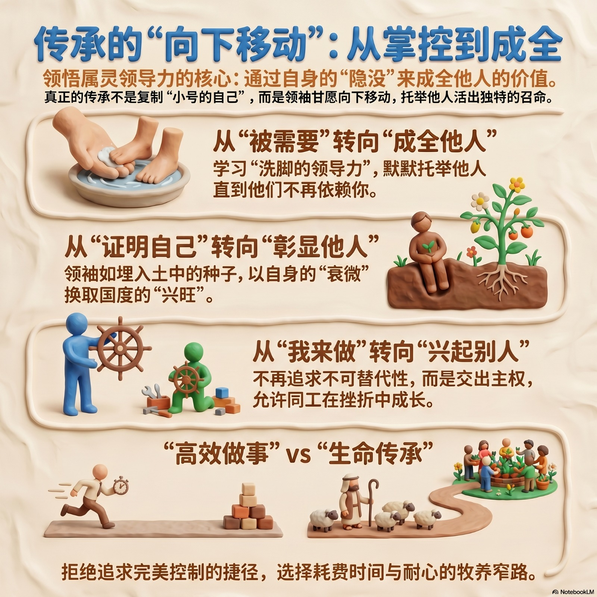

在今天的文化甚至是教会文化中, “传承”往往带着一种隐秘的扩张欲。我们谈论传承时, 潜意识里想的常常是: 如何复制我的理念?如何延续我的方法?如何让人接我的班, 好让我的系统与风格得以存续? 不知不觉间, 我们把传承做成了某种“基因复制”的领导力技术。
在许多领袖的潜意识里, 最深的恐惧不是门徒不成长, 而是门徒成长到“不再需要自己”。因为“被依赖”能带来极大的控制欲与虚荣心的满足。但耶稣的领导力是“洗脚的领导力”。洗脚意味着你必须站在低处, 仰望对方, 用你的服侍默默托举他, 直到他能独自站立, 走向他自己的召命。
真正的属灵传承, 绝对不是把别人塑造成“小号的自己”, 而是让别人活出他们被上帝创造时, 那独特、本来的样子。这需要领袖经历一场“讲台的退场”。这意味着, 你不再是那个永远掌控大局、不可或缺的明星；你必须成了一颗埋进土里的种子, 用自己的隐没, 换取一整片麦田的成熟。正如施洗约翰那充满属灵智慧的宣告: “他必兴旺, 我必衰微。” (约 3:30) 领袖的衰微, 往往是上帝国度兴旺的开始。
世俗的领导力: 是把人当作工具, 来成就领袖的异象与系统。十字架的领导力: 是领袖燃烧自己, 来显明每一个卑微灵魂的尊贵。
在陪伴组员的过程中, 我们常常带着一份迫切的爱心: 看见他们经历软弱, 就本能地想要去多走一步、多帮一点。但有时候, 上帝也想带我们经历一场更轻省的属灵翻转: 让我们试着放下“我必须凡事撑住”的隐形压力, 不再急于用果效来证明自己的价值。当我们甘心退到陪伴的位置, 就会惊奇地在那些看似软弱、破碎的生命里,看见上帝自己那极大的荣耀。
属灵的传承, 从来不是在复制一个“不可替代”的自己。很多时候, 我们内心里的那句“少了我不行”的隐忧, 往往模糊了我们的界限。我们误把“过度的责任感”当成了忠心, 却在不知不觉中抓紧了本该放手的主权。
真正的差遣是: 即使我的名字退场、座位空出, 上帝的国依然有人在为祂奔跑。属灵的领袖, 会用尽一生去成全门徒, 让他们“独当一面”。真正的传承不是交接一份工作, 而是交出生命的主权——不是“没有我该怎么办”, 而是“没有我, 你们照样奔跑”。
正如耶稣, 祂最伟大的工作不是留在地上做完所有事。祂曾对门徒说: “我所做的事, 信我的人也要做, 并且要做比这些更大的事。” (约 14:12) 这种毫无保留的成全, 在祂升天退场后得到了印证——门徒反倒翻转了世界。耶稣没有留下一个离不开祂的温室, 祂留下的是一群被祂推向风浪、能经历蜕变的门徒。

反思导引： 我们常以“他还没预备好”、“怕他做不好”为由，继续把持着小组的核心服事。但耶稣明知门徒会跌倒、会争论谁最大，依然差遣他们。
你是否愿意容许新领袖在“做不好”的挫折中成长? 你是在保护事工的“完美”, 还是在限制新领袖的“生机”?
2. 安全感与价值: 如果这个小组不再需要我, 我的属灵身份认同会动摇吗?反思导引： “向下移动”最难的障碍，是领袖内心的“被需要感” 。当看到新领袖被兴起、甚至做得比自己更好时，我们内心是真正的感恩，还是隐约感到失落与威胁？
你的价值是建立在“组长这个位置”上, 还是建立在“成全下一代”的使命上? 你敢不敢成为那个“功成身退”, 却在幕后默默祝福的保罗?
3. “时间与代价”: 我是在走一条“高效做事”的捷径, 还是在走一条“生命传承”的窄路?反思导引： 自己做，总是最快、最省心、最不容易出错的；而陪伴、教导、容忍新领袖的笨拙，需要耗费极大的时间与极高的耐心。
评估你过去一个月的时间分配, 你花在“交代/完成工作”的时间多, 还是花在“陪伴、聆听、建立新领袖生命”的时间多?你是在经营一个“高效运作的机构”，还是在牧养一个“生生不息的教会” ？
4. 你有想过要“传承/培养”的潜在接班人或核心同工吗?你可以怎样陪伴、鼓励、装备他们？并且为他们祷告。
5. 回到教会后, 你第一个想落实在小组/事工中的改变是什么?有没有一个具体行动, 可以帮助更多人一起成长、一起参与、一起被建立?